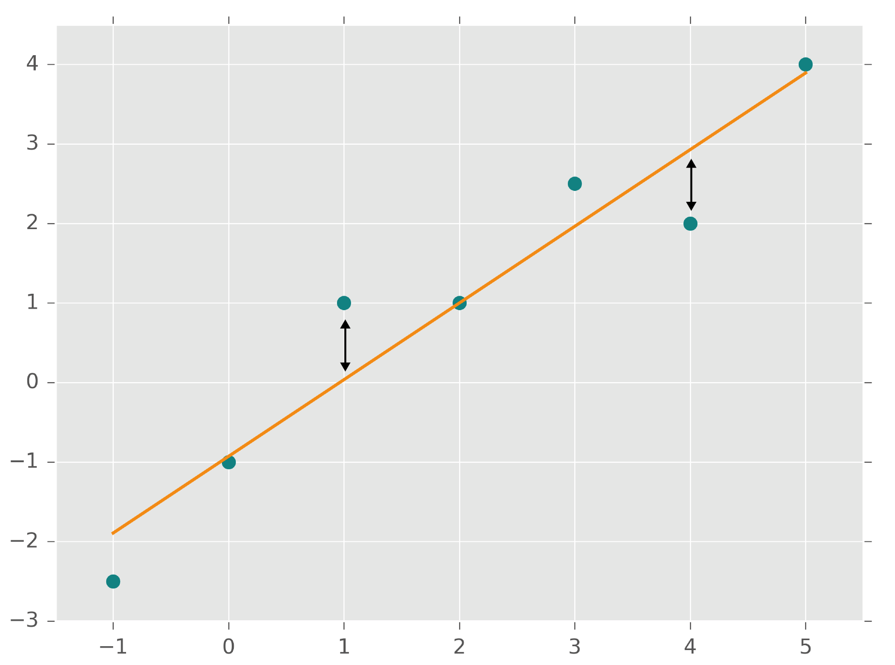

From Scatter Plot to Regression Line
Introduction
Most of us have come across a scatter plot that displays a series of observations on
a Cartesian coordinate system where the two dimensions ($x$ and $y$) represent features of our
interest. Despite its simplicity, a scatter plot offers valuable insights. At a glance, we can
determine the range of values, clusters, and outliers. Often, a likely association between the
two features becomes apparent, and we can even imagine a line that models and extends
the general trend the scatter plot points out.
We see the ranges of height and weight of eighteen year old persons.
And the two features seem positively correlated.
Whether you're attempting to find a third point by interpolating linearly between two
known points or using a complex neural network for prediction, the concept of regression
is always present in the background. This article will work out the regression line from a
two-dimensional scatter plot in an intuitive way. Once we have a firm understanding of this process
more advanced concepts will be easier to grasp.
Graph of Averages
In the scatter plot above showing the height and weight of 18-year-old persons, you
might have spotted a trend and a possible line describing the cloud of dots. With a simple trick,
we can fabricate a satisfyingly accurate line. Namely, we can group our observations along the
$x$-axis, calculate the group averages $\bar y_i$, map them on the cloud, and draw a line through
them, voilà, there is our graph of averages.
Change the number of groups to see how the Graph of Averages reacts.
The information of the scatter was condensed into a few dots. As shown in the plotted
graph, larger groups yield a smoother curve but sacrifice a lot of information. On the other hand,
smaller groups
preserve more information, making the graph more sensitive to variations in the data.
This is
commonly referred to as the bias-variance trade-off or generalization versus overfitting
problem
when assessing (regression) models.
While the graph of averages may seem like a reasonable summarization of the relationship
between the
variables, it is essentially just a series of dots connected by a line without any
functional
expression. To construct a function for this graph, one would have to piece it together,
line by
line, from dot to dot. If we were to extract an estimate $\hat{y}$ from this
hypothetical graph, it
would require a linear interpolation along the line of the relevant $x$ segment of that
graph, which
is not what we're looking for.
Standard Deviation Line
Another method to summarize the information stored in a scatter plot is by finding the
averages of
your variables and their standard deviations $s_{x}$ and $s_y$. The two averages mark
the point
of
averages ($\bar{x}, \bar{y}$), which sits in the middle of the cloud of
observations. The
standard
deviation is the most commonly used measure of the spread and is equal to the square
root of the
variance $s^2$. Often you'll see variance written like this $\sigma^2$ and standard
deviation as
$\sigma$ which signify population parameters, that describe the whole population.
Normally, however,
only a sample is available, and measures obtained from samples are called (sample)
statistics.
Henceforth, I will refer to sample statistics and use their symbols since we usually
work with
sample data.
The standard deviation of $X$ can be thought of as a “typical” distance of the
observations $x_i$
from its mean, $\bar{x}$. Like the variance, the standard deviation is always a positive
number and
penalizes large deviations from the mean by squaring the errors.
$$s_{x} = \sqrt{\frac{\sum_{i=1}^{n}(x_i - \bar{x})^2}{n-1}}$$
The point of averages ($\bar{x}, \bar{y}$) and the standard deviations $s_{x}$ and $s_y$
help us
understand where the middle of all observations lies and what the typical deviation from
that point
is. By starting from the point of averages, we can draw a line that has a slope of
$\frac{s_y}{s_x}$. Each step of one $s_x$ (typical deviation from $\bar{x}$) along the
x-axis is
then associated with one step of $s_y$ (typical deviation from $\bar{y}$) on the
$y$-axis. This line
is referred to as the standard deviation line (or SD Line for short).
But this is a pretty rough measure. Remember that standard deviation is the average
deviation
from the mean and is calculated independently from the other variable. By combining the
two
standard deviations in a slope we only get a very general sense of the joint behavior of
the
two variables.
Additionally, the direction of the line is missing. In the plot above I have identified a
positive correlation with a view to the scatter plot and drawn SD Line accordingly. But
If
the actual line was downward-sloping, the ratio $\frac{s_y}{s_x}$ would still be
positive,
as the standard deviations are always positive. In any way, we would like to have
mathematical proof of the correlation and its direction.
The correlation coefficient will help us to gain a more detailed understanding of the
joint
movement of the variables and to quantify the direction of the correlation.
Pearson's Correlation
Pearson's correlation coefficient is the most widely used measure of correlation, which
indicates the linear relationship between two observed phenomena. This coefficient is
unitless, allowing the examination of a relationship between values that cannot be
expressed
in the same units, such as height and weight.
The correlation coefficient, $r$, measures the strength and direction of the linear
relationship between two variables. It takes values between $-1$ and $1$, where the sign
indicates the direction of the relationship and the number indicates the strength of the
association. A positive $r$ value means that as one variable increases, the other also
increases, while a negative $r$ value means that as one variable increases, the other
decreases.
The limitation to linear relationships means that Pearson's correlation coefficient
would be
around zero for a random heap of dots (first subplot) as well as for a perfect quadratic
relationship (U-shaped subplot). Therefore, a low correlation coefficient should not be
mistaken
for independence of the variables. To be on the safe side plot your data and make sure
it is
monotonic (steadily increasing or decreasing), otherwise, the correlation coefficient
may not be
meaningful.
Another thing to keep in mind is that correlation measures association between
variables, but
association does not necessarily indicate causation. Correlation can be due to pure
coincidence
or a third, hidden factor (also known as a confounder) that independently affects the
observed
variables.
Let's have a look at the formula of Pearson's correlation coefficient to understand what
it
does. In the numerator and denominator the observations deviations from the point of
averages
are used.
$$r = \frac{\sum_{i=1}^{n}(x_i - \bar{x})(y_i - \bar{y})}{\sqrt{\sum_{i=1}^{n}(x_i -
\bar{x})^{2} \sum_{i=1}^{n}(y_i - \bar{y})^{2}}}$$
The interesting part is happening in the numerator. Let's say we have an observation
($x_{i},
y_i$) that is to the right ($x_i > \bar{x}$) and above the point of averages ($y_i
>
\bar{y}$).
For this observation, we would multiply two positive values $(x_i - \bar{x})(y_i -
\bar{y})$
yielding once again a positive value. Now take an observation to the left ($x_i <
\bar{x}$)
and
below ($y_i < \bar{y}$) the point of averages, both the deviations from the means are
negative
but due to the negation of the minus sign by multiplication the result of $(x_i -
\bar{x})(y_i - \bar{y})$ is positive too.
When we have observations in the lower-left and upper-right quadrants, the numerator of
our
equation is positive. Conversely, when we have observations in the upper-left and
lower-right
corners, the numerator is negative. The denominator standardizes the squared values in
the
numerator, which limits the resulting coefficient to a range of values between $-1$ and
$1$.
Imagine you have about the same number of observations sitting in positive and negative
quadrants in the plot below, their effect would cancel out and the correlation
coefficient
amounts to approximately zero. This is why Pearson's correlation coefficient only works
with
linear relationships.
Perhaps you can now see why a positive correlation coefficient is obtained when the
majority
of observations are clustered in the lower-left and upper-right corners, while a
negative
coefficient is obtained for observations in the upper-left and lower-right areas.
The correlation coefficients formula can also be written as:$$r=\frac{s_{x y}}{s_xs_{y}}
$$where $s_{x y}=\frac{1}{n-1} \sum_{i=1}^{n}(x_i - \bar{x})(y_i - \bar{y})$ is the
sample covariance which measures the joint variability of $x$ and $y$ while
$s_x$
and
$s_{y}$ are the respective standard deviations that normalize the covariance. The
correlation
coefficient can thus be understood as a normalized version of the covariance.
Notable qualities of $r$
- The coefficient $r$ measures linear association in relation to standard deviations.
- The sign indicates the direction of the association and the value its strength.
- The correlation coefficient is a unitless number. It is not affected by:
- Interchanging the two variables.
- Changes of scale: Adding the same number to one variable or multiplying all
its
values
by the same
positive number only changes the variable's scale and does not affect $r$.
Regression Method
The abovementioned qualities of Pearson's coefficient have interesting implications.
Firstly, the
relative nature of the coefficient enables comparison between datasets of varying
scales.
Secondly, it provides the direction of the relationship with mathematical proof.
Finally, the
value of $r$ provides detailed information about the joint behavior of the two
variables. The
slope of ($\frac{s_y}{s_{x}}$) only contains insufficient info on joint behavior. But by
adjusting the slope of the SD Line with the correlation coefficient we obtain the proper
slope
of the regression line.
$$r*\frac{s_y}{s_{x}}$$
A line with this adjusted slope does only change by a certain percentage of the
'typical'
deviations from the point of averages. The sign tells us if the variables move in the
same
direction (upward-sloping, positive sign) or in opposing directions (downward-sloping,
negative
sign). Combining the slope of the SD Line and the correlation coefficient is called the
regression method in contrast to the more common method of arriving at a regression
parameter
namely the method of least squares.
Method of Least Squares
It is common to express the regression line using the following formula:
$$\hat{y}=\hat\beta_0+\hat\beta_{1}x+\epsilon$$
To draw this line, we start from the intercept $\hat\beta_0$ --the point where the line
crosses
the $y$-axis -- and then extend the line by moving along the slope of $\hat\beta_1$ for
every
increment of $x$. Here, the slope $\hat\beta_1$ is the same as the one from the
regression
method but now derived through the method of least squares.
The symbols' hats above signify that they are estimates. The function's right-hand side
consists
of two estimates ($\hat\beta_0, \hat\beta_{1}$), and thus, the outcome $\hat{y}$ is also
an
estimator for the observed value of $y$. We can evaluate our estimates by measuring how
far they
deviate from the actual values. The epsilon ($\epsilon$) in the formula represents the
combined
deviation of our estimates from the actual values. The so-called error term $\epsilon$
can be
understood as the impact of all unaccounted factors in the regression model.
For one specific estimate we calculate the individual error $\epsilon_i$ as the
discrepancy
between the predicted value $\hat{y_i}$ and its actual observed value $y_i$ as:
$$(y_{i} - \hat{y_i}) = \left[y_{i} - (\hat\beta_0+\hat\beta_{1}x_i)\right]$$
If you're attempting to fit a straight line to the data, the errors (of prediction) are
the vertical
distances between the observed and estimated values. In other words, they are the
distances between
the dots and the line in the plot below.

The general idea behind the method of least squares is to minimize the overall errors
between estimates and observations. Therefore the sum of the squared errors (SSE) is minimized.
$$min\left\{\sum[y_i-(\hat\beta_0+\hat\beta_{1}x_i)]^2\right\}$$
Taking the squared errors has two benefits. First of all if we minimize the sum of
un-squared errors we might find multiple minima, but it can be shown that there is one (and only
one) line for which the SSE is a minimum. More specifically it transforms the minimization problem
into a convex optimization problem, allowing for the use of derivatives to determine optimal
parameters. Secondly squaring errors accentuates larger deviations, this can potentially
prevent overfitting but also lead to over-simplification (generalization versus overfitting).
By optimizing the above function we find the quantities of $\hat\beta_0$ and
$\hat\beta_{1}$ that
yield the least square error.
In math it looks like this:
$$\text{Find }\min_{\beta_{0}, \,\beta_1} Q(\beta_{0}, \,\beta_1), \quad\quad \text{for
}
Q(\beta_{0},\,\beta_1) = \sum (y_i - (\beta_0 + \beta_1 x_i))^2$$
$$\frac{\partial Q(\beta_{0}, \beta_1)}{\beta_{0}}\quad \rightarrow \quad
\hat\beta_{0}=\bar{y}-\hat{\beta_1}\bar{x}$$
$$\frac{\partial Q(\beta_{0}, \beta_1)}{\beta_{1}}\quad \rightarrow \quad \hat{\beta_1}=
\frac{\sum
(x_i - \bar{x})(y_i - \bar{y})}{\sum (x_i - \bar{x})^{2}} = \frac{s_{x y}}{s_x^2}$$
They are called the least squares estimates of the population parameters $\beta_0$ and
$\beta_1$,
and the prediction equation $\hat{y}=\hat\beta_0+\hat\beta_{1}x+\epsilon$ is called the
least
squares line.
I have said before that this slope of $\hat\beta_1$ is the same as the one worked out by
combining the slope of the SD Line and the correlation coefficient. Here is how they're
connected in symbols:
$$\hat\beta_1=r \frac{s_y}{s_{x}}=\frac{s_{x y}}{s_{x}\thinspace
s_{y}}\,\frac{s_y}{s_{x}} =\frac{s_{x y}}{s_{x}^2}$$
where $r$ is the correlation coefficient, $s_x$ and $s_y$ are the sample standard
deviations,
$s_{xy}$ the sample covariance and $s_x$ is the sample variance of $x$.
Let's see how we find the intercept $\hat\beta_0$.
$$\hat\beta_{0}=\bar{y}-\hat{\beta_1}\bar{x}$$
It's pretty straightforward, once we have the slope of the regression line we can walk from the
point of averages ($\bar x, \, \bar y$) along the regression line towards the point where it
intersects with the $y$-axis ($x=0$) this is our intercept $\hat\beta_0$.